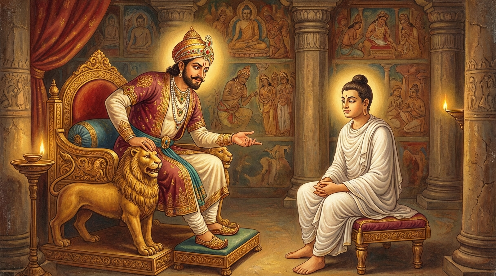

5. පබ්බතූපත්ථර ජාතකය (195)
“පබ්බතූපත්ථරෙ රම්මෙ” යන මේ ධර්ම දේශනාව බුදුරජාණන් වහන්සේ ජේතවනාරාමයේ වැඩවාසය කරන සමයෙහි කොසොල් රජතුමා අරබයා දේශනා කළ සේක. කොසොල් රජුගේ එක්තරා ඇමතියෙක් අන්තඃපුරයේ ස්ත්රියක හා වරදෙහි බැඳුණේය. රජතුමා ද ඒ ගැන විමසා බලා, සත්ය තොරතුරු දැනගෙන “බුදුරජාණන් වහන්සේට පවසා විසඳුමක් ගන්නෙමි”යි සිතා ජේතවනයට ගොස් බුදුරජාණන් වහන්සේ වැඳ, “ස්වාමීනි, මගේ අන්තඃපුරයේ එක් ඇමතියෙක් වරදක් කළේය. ඔහුට කුමක් කිරීම වටී දැ”යි විමසීය. එවිට බුදුරජාණන් වහන්සේ, “මහරජ! ඒ ඇමතියා ඔබට උපකාර කරන්නෙක් ද? ඒ ස්ත්රියත් ඔබට ප්රිය ද?” යි විචාළ සේක. “එසේය ස්වාමීනි! අතිශයින්ම උපකාරකයෙකි. රජමාලිගාවේ සියලු කටයුතුවල වගකීම් දරයි. ඒ ස්ත්රියත් මට ප්රිය ය” යි කී කල්හි, “මහරජ! තමන්ට උදව් වන සේවකයන් කෙරෙහි ද, ප්රියමනාප ස්ත්රීන් කෙරෙහි ද ද්රෝහී වන්නට නොහැකිය. පෙරත් රජවරු නුවණැත්තන්ගේ කථා අසා මධ්යස්ථ වූහ” යි වදාරා ඔහු විසින් අයදින ලදුව අතීත සිද්ධිය ගෙනහැර දැක්වූ සේක.
යටගිය දවස බරණැස් නුවර බ්රහ්මදත්ත රජු රාජ්ය කරන කල්හි බෝධිසත්ත්වයෝ ඇමති කුලයක ඉපදී වැඩිවියට පත්ව, ඒ රජුට අර්ථයෙන් ධර්මයෙන් අනුශාසනා කරන්නා වූහ. එකල රජුගේ එක්තරා ඇමතියෙක් අන්තඃපුර ස්ත්රියක හා වරදෙහි බැඳුණේය. රජතුමා ඒ බව සත්ය වශයෙන්ම දැනගෙන, “මේ ඇමතියා ද මට බොහෝ උපකාර කරයි. මේ ස්ත්රිය ද මට ප්රියමනාප ය. ඒ නිසා මොවුන් දෙදෙනාම විනාශ කරන්නට නොහැකිය. පණ්ඩිත ඇමතියාගෙන් ප්රශ්නයක් විමසා, ඉදින් ඉවසිය යුතු නම් ඉවසන්නෙමි. ඉදින් නොඉවසිය යුතු නම් නොඉවසන්නෙමි”යි සිතා බෝසතාණන් වහන්සේ කැඳවා අසුනක් දී, “පණ්ඩිතයෙනි! ප්රශ්නයක් විචාරන්නෙමි”යි පැවසීය. “මහරජතුමනි! විචාරන්න, මම විසඳන්නෙමි”යි කී කල්හි රජතුමා ප්රශ්නය අසමින් පළමු ගාථාව ප්රකාශ කළේය.

“සිත්කලු වූ හිමාලය පර්වත සමීපයෙහි සිහිල් ජලය ඇති, පියුමෙන් ගැවසුණු පොකුණක් විය. ඒ පොකුණ සිංහයෙකු විසින් රකිනු ලබන බව දැන දැනම, හිවලෙක් එයින් දිය පානය කළේය.”
යනුවෙන් පළමු ගාථාව කීවේය.
එහි පබ්බතූපත්ථරෙ රම්මෙ යනු හිමාලය පර්වත පාමුල පැතිරී තිබුණු රමණීය භූමි භාගයක යන අර්ථයි. ජාතා පොක්ඛරණී සිවා යනු සිසිල් වූ, මිහිරි ජලය ඇති පොකුණක් හටගත්තේය යන්නයි. තවද පියුම් ආදියෙන් ගැවසී ගත් ගංගාව ද ‘පොක්ඛරණී’ නම් වේ. අපාපායී යනු ‘අප’ යනු උපසර්ගයකි; බීවේය යන අර්ථයි. ජානං සීහෙන රක්ඛිතං යනු ඒ පොකුණ සිංහයන් විසින් පරිභෝජනය කරන බැවින් සිංහයෙකු විසින් රක්නා ලද්දකි. ඒ හිවලා ද “මෙය සිංහයා විසින් රකින ලද්දක් ය” යි දැනගෙනම දිය පානය කළේය. ඔබ කුමක් සිතන්නෙහි ද? අඥාන හිවලා සිංහයාට බිය නොවී දිය බිව්වේය. මේ සිද්ධිය එවැනි පොකුණක් වැනිය යනු මෙහි අදහසයි.
බෝසතාණන් වහන්සේ, “ඒකාන්තයෙන්ම එක් ඇමතියෙක් මොහුගේ අන්තඃපුරයෙහි දූෂ්ය වූවෙක් (වරදෙහි බැඳුණෙක්) වන්නේය” යි දැන, දෙවන ගාථාව ප්රකාශ කළේය.
“මහරජ! ඉදින් සිවුපාවෝ මහ නදියෙන් දිය බොති. ඒ හේතුවෙන් එය ගඟක් නොවන්නී නොවේ. ඉදින් ඔවුන් (ඒ දෙදෙනා) ඔබට ප්රිය නම්, ඔවුන්ට කමා කරන්න.”
යනුවෙන් දෙවන ගාථාව ද කී සේක.
එහි සාපදානි යනු හුදෙක් හිවලා පමණක් නොව, සෙසු බල්ලන්, පසද මුවන්, බළලුන් හා වෙනත් මෘගයන් ආදී සියලු සිවුපාවෝ ද, එය පියුම් ආදියෙන් වැසී ගිය බැවින් ‘පොක්ඛරණී’ යැයි ලබන ලද නම් ඇති ගඟෙන්ම බොන්නාහුය. න තෙන අනදී හොති යනු ගඟෙහි දෙපා, සිව්පා සත්ත්වයෝ ද, සර්පයෝ ද, මත්ස්යයෝ ද යන සියලු පිපාසිත ප්රාණීහු පැන් බොති; ඒ කාරණයෙන් ඒ ගඟ, ගඟක් නොවන්නේ නොවේ. ඉඳුල් කළ ගඟක් ද නොවේ. කුමක් නිසා ද? සියල්ලන්ටම සාධාරණ බැවිනි. යම්කිසිවෙකු විසින් ගඟෙහි පැන් බොන ලද පමණින් ගඟ දූෂ්ය නොවේ. මෙසේම ස්ත්රිය ද කෙලෙස් වශයෙන් සැමියා ඉක්මවා අනිකෙකු සමග සංවාසයේ යෙදුණු පමණින් (ඇය) ස්ත්රියක් නොවන්නේ නොවේ. කුමක් නිසා ද? සියල්ලට සාධාරණ බැවිනි. ඉඳුල් කළ ස්ත්රියක් ද නොවේ. කුමක් නිසා ද? (සංවාසයෙන් පසු) දියෙන් සෝදා පිරිසිදු වන හෙයිනි. ඛමස්සු යදි තෙ පියා යනු ඉදින් ඔබට ඒ ස්ත්රිය ප්රිය ද, ඒ ඇමතියා බොහෝ උපකාර කරන්නෙක් ද, ඒ දෙදෙනාටම ඉවසනු මැනවි; මැදහත් ව සිටින්න යනුයි.
මෙසේ මහාසත්ත්වයන් වහන්සේ රජුට අවවාද දුන්හ. රජතුමා ඔහුගේ අවවාදයෙහි පිහිටා, “නැවත මෙබඳු පාප කර්මයක් නොකරව්” යැයි අවවාද කොට දෙදෙනාටම සමාව දුන්නේය. එතැන් පටන් ඔවුහු එම ක්රියාවෙන් වැළකුණාහ. රජතුමා ද දානාදී පින්කම් කොට ජීවිතාන්තයේ දී ස්වර්ග පුරය පිරවූයේය (දෙව්ලොව උපන්නේය). කොසොල් රජතුමා ද මේ ධර්ම දේශනාව අසා ඒ දෙදෙනාටම සමාව දී මධ්යස්ථ විය.
බුදුරජාණන් වහන්සේ මේ ධර්ම දේශනාව ගෙනහැර දක්වා ජාතක කථාව නිමවා වදාළ සේක. “එකල රජව උපන්නේ ආනන්ද තෙරුන් ය. නුවණ ඇති ඇමතියා වනාහි මම ම වූවෙමි” යි වදාළ සේක.
පස්වන වූ පබ්බතූපත්ථර ජාතක වර්ණනාවයි.